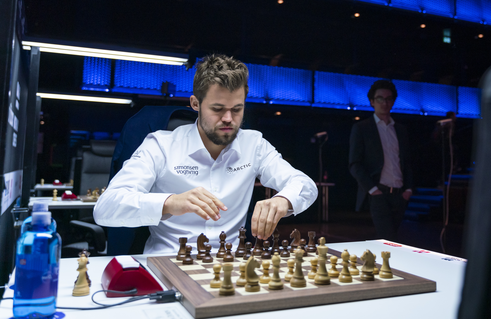

Quizás sin la autoridad que demostró en los últimos torneos pero ganando con claridad y una ronda antes del cierre, el Campeón Mundial de Ajedrez, el noruego Magnus Carlsen, se consagró campeón en el Norway Chess 2019 gracias a su increíble forma en el ajedrez rápido, donde volvió a evidenciar una clara superioridad respecto a sus rivales. Magnus ganó tan solo dos partidas de ajedrez clásico, empatando el resto, pero arrasó ganando todas sus partidas en la modalidad armageddon, exceptuando la que disputó contra Fabiano Caruana, su retador al título del mundo el año anterior en Londres, con el torneo ya resuelto. En medio de los debates por la nueva modalidad del torneo, Magnus repite la costumbre y vuelve a ganar como local, como lo viene haciendo hace 7 años.

Nadie puede decir que este torneo fue uno más en el ajedrez. Los organizadores, no sin polémica mediante, implementaron un sistema de
desempate en modalidad armageddon luego de cada partida clásica para promover a los jugadores a luchar al máximo por la victoria
en las partidas a ritmo normal. Con esta modalidad, la victoria en la partida normal otorga 2 puntos al ganador y 0 al perdedor y, en caso
de llegar al armageddon, quien se emerja victorioso sumará 1.5 puntos contra 0.5 del perdedor. De esta forma los organizadores idearon un sistema
por el cual cada partida salga con un jugador ganador.
Recordemos que la modalidad armageddon es un "a todo o nada", donde el jugador blanco con 10 minutos en el reloj, debe ganarle al negro
con 7 minutos. Si la partida acaba en tablas la victoria se la lleva el jugador de negras.
El sistema no tuvo buena recepción en los jugadores, y parece bastante justo dado que a este nivel tan alto de partidas a ritmo clásico
es una lástima que terminen definiéndose por apuros de tiempo o nervios propios de otros ritmos para los cuales ya hay torneos específicos.
De todas maneras, al aficionado el sistema sí le gustó puesto que brinda un morbo y espectáculo mucho mayor que las clásicas partidas.
El gran ganador de esta modalidad fue el Campeón del Mundo y local, Magnus Carlsen, una verdadera aplanadora en partidas a ritmos rápidos que
además tiene nervios de acero, una combinación brutal para la modalidad armageddon que se evidenció en el resultado: 6 victorias en esta modalidad
contra apenas una derrota en la última jornada ante Caruana, con el torneo ya resuelto.
Restará ver ahora si FIDE adopta este sistema en el resto de sus torneos o si otros organizadores desean innovar con esta u otras alternativas.